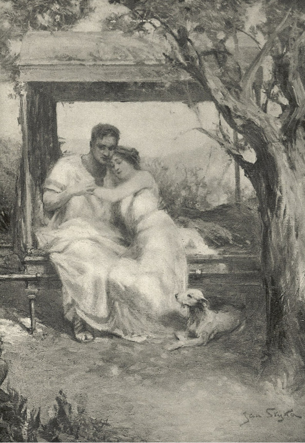

LXVIII
Petronius, když Lygie byla vysvobozena, nechtěje popouzeti Caesara, odebral se s ostatními Augustiany za ním do Palatina. Byl by rád slyšel, o čem tam budou mluviti, a zvláště by se rád byl přesvědčil, neobmýšlí-li Tigellinus něčeho nového ke zkáze dívčině. Ona i Ursus vstupovali arci jaksi pod ochranu lidu a nikdo nyní nemohl na ně vztáhnouti ruku, aniž by se nerozpoutaly nepokoje; nicméně Petronius, věda o nenávisti, jakou k němu hořel vševládný praefekt praetorie, měl za to, že ten pravděpodobně, nemoha prostě na něho, vynasnaží se ještě, aby jakýmkoli způsobem vykonal pomstu na jeho synovci.
Nero byl hněviv a podrážděn, jelikož se představení skončilo zcela jinak, nežli si přál. Na Petronia se z počátku nechtěl ani podívati, ale ten, nepozbývaje chladné krve, přistoupil k němu s naprostou nenuceností „arbitra elegance“ a řekl mu:
„Víš-li, božský, co mi přichází na mysl? Napiš píseň o panně, kterou vládce světa osvobozuje od rohů divokého tura a vrací milenci. Řekové mají jemná srdce a jsem jist, že budou okouzleni takovou písní.“
Neronovi přes všecku popudlivost přišla ta myšlenka vhod, a to dvojnásob: předně jako námět k písni, a za druhé, že v ní mohl oslaviti sebe sama jako velkomyslného vládce světa. Zadíval se tedy chvíli na Petronia a pak řekl:
„Tak jest! Máš snad pravdu! Ale což se pro mne sluší, abych opěval vlastní dobrotu?“
„Nepotřebuješ se zmiňovali o sobě. Každý v Římě beztak uhodne, oč běží, a z Říma se šíří pověsti do celého světa.“
„A jsi tím jist, že se to v Achai bude líbiti?“
„U Polluxe!“ zvolal Petronius.
A odešel spokojen, poněvadž nyní byl si již jist, že Nero, jehož život byl stálým přizpůsobováním skutečnosti literárním námětům, nechce si pokazili látku k písni, a tím také sváže ruce Tigellinovi. Nicméně nezměnilo to jeho úmyslu, že vypraví Vinitia z Říma, jakmile jen Lygiino zdraví přestane tomu býti na závadu. A tak spatřiv jej příštího dne, řekl k němu:
„Odvez ji na Sicílii! Přihodilo se cosi, že ze strany Caesarovy nic vám nehrozí, ale Tigellinus jest hotov použíti třebas i jedu, ne-li z nenávisti k vám, tedy ke mně.“
Vinitius na to se usmál a odvětil:
„Byla na rozích divokého tura, a Kristus ji přece jen zachránil!“
„Nuže, ucti jej obětí sto býků!“ odpověděl s nádechem rozmrzelosti Petronius. „Ale neulož Mu, aby ji zachránil po druhé…! Pamatuješ se, jak Aeolus1 uvítal Odysea, když ten se vrátil, aby ho pěkně požádal o příznivý směr větrů? Božstva se nerada opakují.“
„Až se jí vrátí zdraví,“ odvětil Vinitius, „odvezu ji k Pomponii Grecině.“
„A učiníš tak tím lépe, ježto Pomponie leží nemocna. Řekl mi o tom příbuzný Aulů Antistius. Zde zatím dojde k takovým událostem, že lidé na vás zapomenou, a za dnešních dob nejšťastnějšími jsou ti, na které se zapomnělo. Kéž vám Štěstěna bude sluncem v zimě a stínem v létě!“
To praviv, zanechal Vinitia jeho štěstí, sám pak odešel, aby se vyptal Theokla po Lygiině zdraví a jejím životě.
Ale jí nehrozilo již nebezpečí. V podzemní kobce při vysílenosti, jaká jí zůstala po vězeňské horečce, byl by ji dorazil ztuchlý vzduch a nepohodlí, nyní však byla zahrnuta nejtklivější péčí a nejen blahobytem, nýbrž i přepychem. Na rozkaz Theoklův začali ji po dvou dnech vynášeti do zahrad, jež obklopovaly letohrádek a v nichž setrvávala dlouhé hodiny. Vinitius krášlil její lektiku sasankami, zvláště kosatci, aby jí připomínal atrium v domě Aulů. Nejednou, skryti ve stínu rozrostlých stromů, hovořili spolu, držíce se za ruce, o minulých bolestech a minulém utrpení. Lygie mu říkala, že Kristus jej zúmýslně provedl mukami, aby změnil jeho duši a povznesl ji k Sobě; on pak cítil, že je tomu tak a že v něm nezůstalo nic z bývalého patricia, který neuznával jiného práva nad vlastní choutky. Ale v tom rozpomínání nebylo nic hořkého. Zdálo se jim oběma, že se nad jejich hlavami přehnala celá léta a že ta strašlivá minulost leží již daleko za nimi. Nyní je opřádá mír, jakého nikdy dosud nezakoušeli. Jakýsi nový, neskonale blažený život kráčel k nim a bral je k sobě. V Římě si mohl Caesar řáditi a úzkostmi plniti svět, kdežto oni, cítíce nad sebou záštitu stokrát mocnější, neobaváli se již ani jeho zloby, ani jeho šílených činů, jako by přestal býti pánem jejich života i smrti.
Jednou o západu slunce zaslechli ze vzdálených vivarií přicházející řev lvů a jiných divokých zvířat. Kdysi naplňovaly ty hlasy Vinitia strachem jako zlá předzvěst. Nyní pohlédli na sebe jen s úsměvem a pak oba zvedli oči k večerním červánkům. Lygie, jsouc ještě valně zesláblá a nemohouc choditi o vlastních silách, usínala někdy v zahradním tichu, on pak nad ní bděl, a utkvívaje pohledem na její spící tváři, bezděky myslil na to, že není to již ona Lygie, se kterou se setkal u Aulů. Opravdu, vězení a nemoc zbavily jí částečně půvabu. Tehdy, když ji vídával u Aulů a později, když přišel do domu Miriamina, aby ji odvlekl, byla tak čarokrásná jako socha a přitom i jako květina; nyní však se její tvář stala téměř průhlednou, ruce zhubeněly, tělo se spadlo nemocí, ústa pobledla, a oči zdály se býti dokonce méně modré nežli jindy. Zlatovlasá Eunike, která jí přinášela kvítí a drahocenné tkaniny, aby jí přikrývala nohy, vypadala proti ní jako kyperské božství. Estét Petronius marně se namáhal, aby u ní našel dřívější vábné stránky, a krče rameny, myslil si v duchu, že onen stín z polí elysejských nestál za tolik úsilí, za tolik bolestí a muk, které div z Vinitia nevysály života. Ale Vinitius, který nyní miloval její duši, miloval ji zato tím více, a když bděl nad spící, zdálo se mu, že bdí nad celým světem.

Nejednou, skryti ve stínu rozrostlých stromů, hovořili spolu…
Bůh větrů. ↩︎